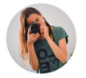

Sobre mí
¡Hola! Mi nombre es Ana y soy la creadora de Delicias Kitchen. Desde pequeña, siempre me ha encantado explorar nuevas recetas y experimentar con ingredientes naturales, buscando el balance perfecto entre sabor y salud.
En este blog, comparto mis recetas vegetarianas y veganas favoritas, que son fáciles de preparar y están llenas de colores y sabores increíbles. Mi objetivo es inspirarte a disfrutar de la cocina saludable y sostenible, sin perder la alegría de comer bien.
Además de cocinar, me apasiona la fotografía culinaria y el diseño. Cada receta aquí es una mezcla de creatividad y amor por los detalles.
Espero que encuentres aquí un espacio que te motive a probar nuevas recetas y que disfrutes tanto como yo compartiéndolas. ¡Gracias por estar aquí y bienvenid@ a mi pequeño rincón del mundo!